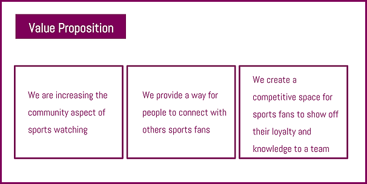
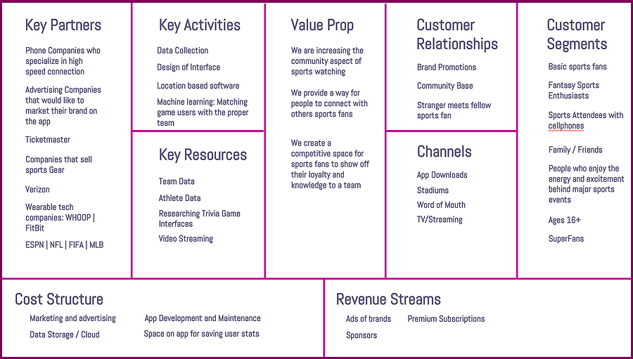

Pre:G before the show
NYC Media Lab and Verizon: 5G Sports, Media and Tech Fellowship
Pre:G is a sports trivia game app that utilizes machine learning, video streaming, and betting to further enhance the pregame community and excitement around sports.
Team: Barsha and Milan
Context
Summer 2018 I was selected as one of four teams awarded $5,000 to participate in the 8-week NYC Media Lab Sports/Media/Tech Startup Bootcamp. Created and pitched a startup company to encourage and support customer discovery and market validation.
My teammate Milan and I created a new experience for sports fans that utilize both the excitement that happens before the games and the much anticipated release of the 5G network.
Prompt
Build or expand entrepreneurial concepts across 5G and emerging media topic areas:
How can 5G and an Intelligent Edge network impact the fan experience at next-generation sports stadiums, arenas, and other “connected” venues?
How can 5G and an Intelligent Edge network enable more compelling and meaningful e-sports experiences for gamers and fans?
How can mobile-first applications of emerging media technology like augmented reality, computer vision, and personalization algorithms engage the generation Z (born in the mid 1990s to early 2000’s) audience for sports?
Research + User Interviews
Context
The mobile phone has been dominating the tech industry
Collaborative App games are a hit, for example: Words w/ friends, HQ Trivia is a phenomenon, Pokemon Go, and Video is exploding.
Collaborative mobile games have been highly popular.
What if you take short edited sports videos combine it with trivia and create a way for families and friends who are separated from each other, to engage around sports content on Game day?
Questionnaire 1
Below is the result from our interview pertaining to questionnaire one
Questions we asked
1. Where and with who do you watch a game?
2. What is your go-to for getting player information?
3. Is this information important during a live game?
4. Do athletes have any influence on your purchases?
5. What process do you go through for purchasing athletic gear?
Key Takeaways
- Most people went to games for entertainment
- Everyone uses google
- Jumbotron is enough information
- Look up information in rare cases
- Athletes have little impact on their purchases. Qualities like: price, quality/durability, and athlete popularity played a main role in the purchasing of team gear.
Questionnaire 2
Milan and I conducted over eighty interviews in an 8 week period. We started this process by creating a questionnaire that we handed to people within our network. With this questionnaire we were trying to get a sense of how sports fans get their information and where they watch games.
Key Takeaways
Not many people are serious sports fans. Those we talked with become fans for the community element and comradery.
Questionnaire 3
Milan and I conducted over eighty interviews in an 8 week period. We started this process by creating a questionnaire that we handed to people within our network. With this questionnaire we were trying to get a sense of how sports fans get their information and where they watch games.
Questions we asked
1. Who do you think will win? Why?
2. Have you always been a fan? Have you watched every game?
3. Do you wich someone was here who is not here?
Key Takeaways
We changed our tactic and decided to observe the behaviour rather than ask questions. We went to the spaces where we knew sports fans would be. During the World Cup we went to various sports bars venues throughout Manhattan and Brooklyn during certain matches to conduct more interviews. While in these spaces before the game, we would ask simple questions.
A feeling of Pre-Game excitement and anticipation was always there before a game. Fans tend to congregate to the same spaces. Park Slope, Brooklyn has bars that are famous for hosting European sports fans. While Columbian soccer fans can be seen in Jackson Heights, Queens. By mapping these patterns of where sports fans go before kick off, we thought it best to utilize the mobile device for our experience.
Prototype 1
Pre:G is a sports trivia game app that happens right before major sport events.
Community | Competition | Mobile
Concept Development
Business Model Canvas
Final Prototype
In the end, we created an experience where sports fans can play sports trivia specific to the game they are about to watch. Your profile will show your expertise level associated with certain teams. This expertise level will be determined and constantly changing after every trivia game you participate in.
You can have a family group that plays against each other. Or you can set you to profile to "searching" meaning that you are looking for a team in your area to play trivia with. A team within your vicinity or in the bar can recruit you to join their team.
Incentives:
- Bragging rights
- Expertise level increase
- Meeting other sports fans
- A chance to win discounted team gear or tickets